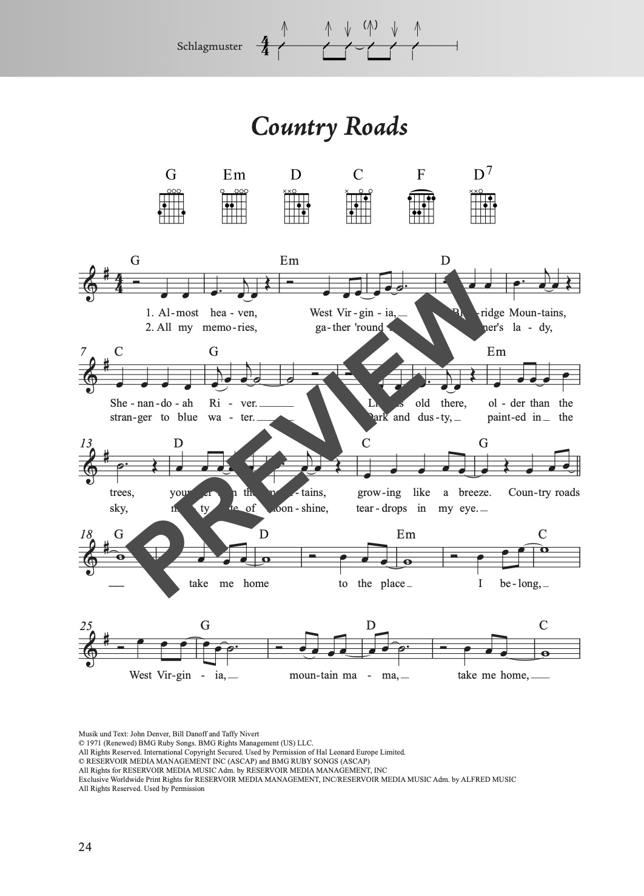
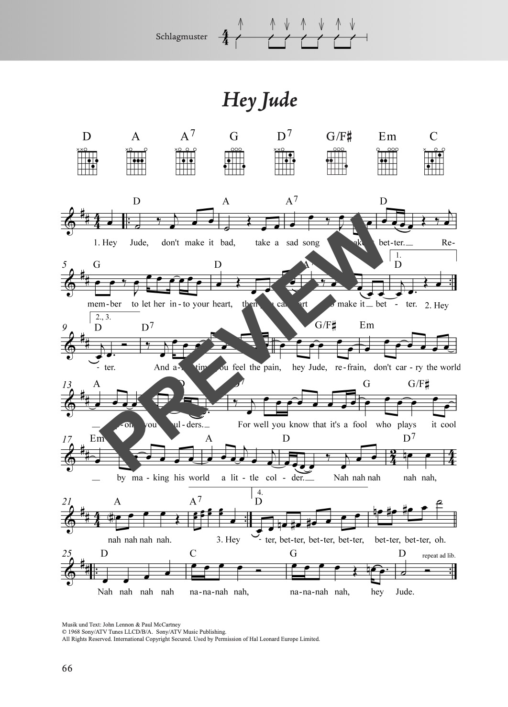
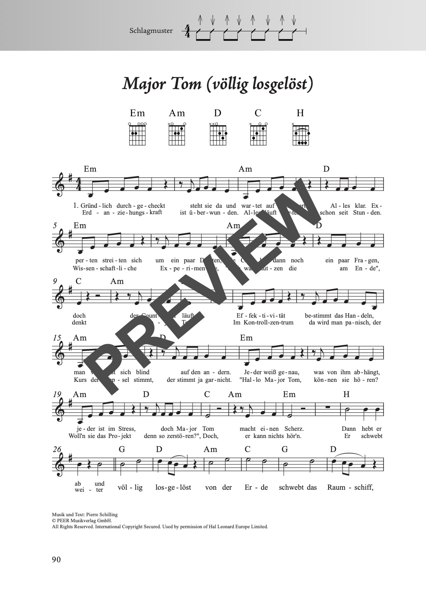
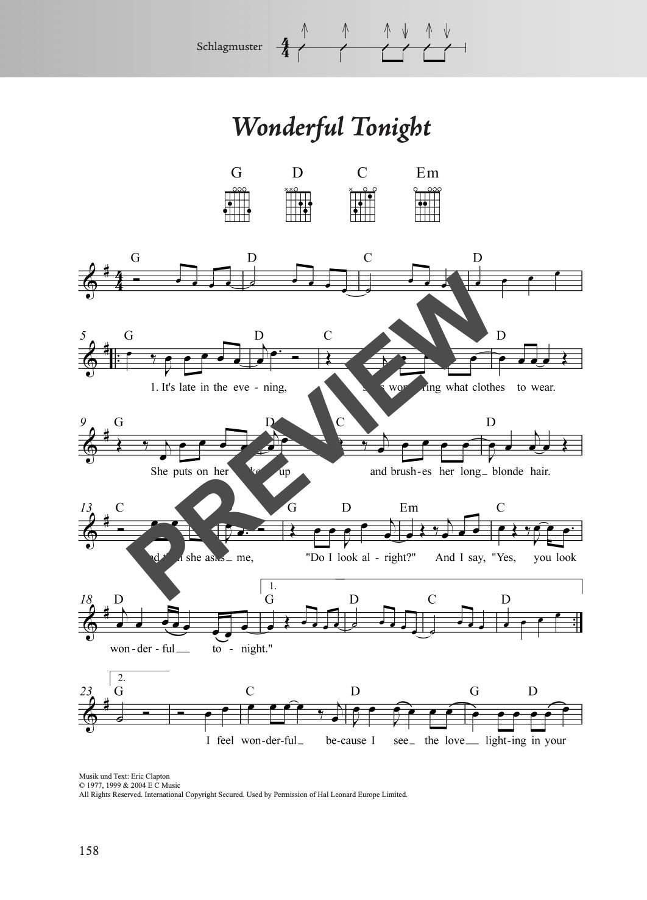

Das Fetenbuch
für Alt und Jung
100 Hits leicht arrangiert für Gesang und Gitarre oder Ukulele. Von Pop und Rock bis Schlager – die perfekte Sammlung für geselliges Singen auf jeder Feier.
für Alt und Jung
100 Hits leicht arrangiert für Gesang und Gitarre oder Ukulele. Von Pop und Rock bis Schlager – die perfekte Sammlung für geselliges Singen auf jeder Feier.
| Ausgabe | Format | Seiten | Bindung | Preis |
|---|---|---|---|---|
| Gitarre | 18 × 25 cm | 168 | Stay-Open-Bindung | 22,00 € |
| Ukulele | 18 × 25 cm | 168 | Stay-Open-Bindung | 19,50 € |
| XXL (Gitarre) | 23 × 31 cm | 168 | Spiralbindung | 26,50 € |
Erhältlich bei Schott Music, Amazon, Stretta Music, Alle Noten, Thomann, Music Store und im gut sortierten Musikfachhandel.
Singen macht glücklich – das bestätigen viele Studien. Menschen, die singen, sind gesünder, lebensfroher, zuversichtlicher und tatkräftiger. Deshalb gibt es mit dem Fetenbuch eine Liedersammlung mit 100 leichten Songs für Gesang und Gitarre aus verschiedenen Genres: Pop, Rock, Schlager und Volksmusik, die sich besonders gut zum gemeinsamen Singen eignen.
Das Buch zeichnet sich durch sein übersichtliches Layout, seine praktische Stay-Open-Bindung und sein handliches Liederbuchformat aus. Durch die geschickte Anlage des Bandes ist das Umblättern selten erforderlich. Dazu sind alle Akkorde mit Griffbildern und alle Lieder mit Begleitmustern versehen, sodass auch Anfänger schnell mitspielen können.
Die XXL-Version mit Spiralbindung steht perfekt auf dem Notenständer. Die Stücke sind fast immer auf maximal zwei Seiten notiert – beim Spielen muss also nicht umgeblättert werden. Zudem sind die Noten und Texte groß genug, um sie auch mit bis zu einem Meter Abstand gut lesen zu können. Die XXL-Version eignet sich daher besonders auch für Personen mit einer Sehschwäche und für das gemeinsame Singen in der Gruppe.
Alle 100 Songs zum Anhören:
100 Lieder in alphabetischer Reihenfolge:
Einen Eindruck vom Inhalt und der Gestaltung:



